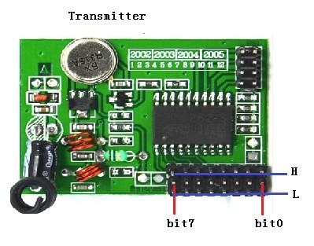
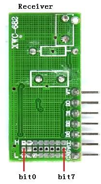
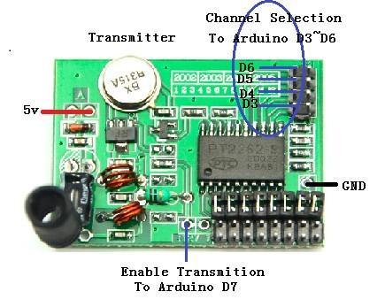
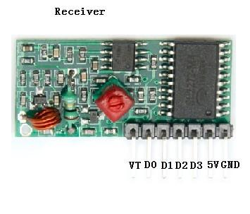

Model: WLS106B5B
http://www.seeedstudio.com/depot/images/product/315rfkitswed.jpg
Warning: this kit is not suitable for data transfer but remote control. Safe for 2 commands/second.
The Transmitter and Receivers modules both have a hardware selectable address setting and will only communicate with each other if they are assigned the same unique address. Both modules have 8 different address pins, with three possible settings for each pin, High, Low, and Unconnected, for a total of 6561 possible addresses.
The first step in pairing a Transmitter and Receiver is selecting the address. If you are only using one pair the easiest address to use is to leave all of the pins unconnected.

Based on the address you have selected set each bit, High, Low, or Unconnected, using a jumper.

Based on the address you have selected set each bit, High, Low, or Unconnected, using a solder bridge.
If you only use one pair of this kit, then you don't need to use the encoding and decoding function.

Step1:Connect 5V and GND from Arduino to the Transmitter.
Step2:Move the jumper from the channel selection pins.
Step3:Connect the channel pins(left column) to Arduino Pin D3~D6.If you only want to control several of these channels, then leave others open.
Step4:Connect the enable transmitting pin to Arduino Pin D7.(Ignore the silk screen +12V on the board)
Step5:Download the demo code to your Arduino libraries, and run.

Step1:Power the receiver the proper 5V and GND.
Step2:For other pins, D0~D3 are corresponded with the channel pins D6~D3 of transmitter.These pins are normally LOW, and when the transmitter is running, the corresponding output of each channel will be set HIGH. VT will be set HIGH whenever there is a channel set HIGH.
If you have questions or other better design ideas, you can go to our forum or wish to discuss.
| Revision | Descriptions | Release |
|---|---|---|
| v1.0 | Initial public release | Jun 08, 2009 |
| v1.01 | Modify the user manual | Oct 11, 2011 |
{kind=link}